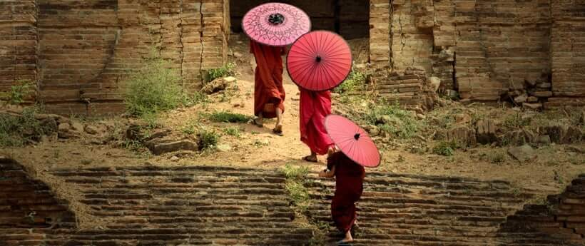

To make sure that the toolbar button appears next to selected block element (see points below) we want to simulate real environment with wrappers differently positioned and some random content above the editor.
Start external typingLike all the great things...) and click the button to open the panel (be quick).
Start external deletingLike all the great things...) and click the button to open the panel (be quick).
Getting used to an entirely different culture can be challenging. While it’s also nice to learn about cultures online or from books, nothing comes close to experiencing cultural diversity in person. You learn to appreciate each and every single one of the differences while you become more culturally fluid.
Life doesn't allow us to execute every single plan perfectly. This especially seems to be the case when you travel. You plan it down to every minute with a big checklist. But when it comes to executing it, something always comes up and you’re left with your improvising skills. You learn to adapt as you go. Here’s how my travel checklist looks now:
Getting used to an entirely different culture can be challenging. While it’s also nice to learn about cultures online or from books, nothing comes close to experiencing cultural diversity in person. You learn to appreciate each and every single one of the differences while you become more culturally fluid.
Life doesn't allow us to execute every single plan perfectly. This especially seems to be the case when you travel. You plan it down to every minute with a big checklist. But when it comes to executing it, something always comes up and you’re left with your improvising skills. You learn to adapt as you go. Here’s how my travel checklist looks now:
Like all the great things on earth traveling teaches us by example. Here are some of the most precious lessons I’ve learned over the years of traveling.

Getting used to an entirely different culture can be challenging. While it’s also nice to learn about cultures online or from books, nothing comes close to experiencing cultural diversity in person. You learn to appreciate each and every single one of the differences while you become more culturally fluid.
Life doesn't allow us to execute every single plan perfectly. This especially seems to be the case when you travel. You plan it down to every minute with a big checklist. But when it comes to executing it, something always comes up and you’re left with your improvising skills. You learn to adapt as you go. Here’s how my travel checklist looks now:
Going to a new place can be quite terrifying. While change and uncertainty makes us scared, traveling teaches us how ridiculous it is to be afraid of something before it happens. The moment you face your fear and see there is nothing to be afraid of, is the moment you discover bliss.